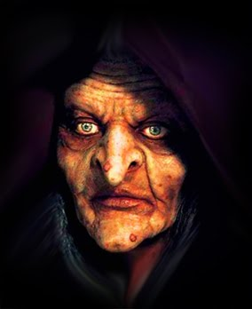

Mangkukulam
Mangkukulam or bruha (from Spanish: bruja, "witch") are witches, wizards, bruho (Spanish:brujo, "wizard, male witch"), or sorcerers who cast evil spells to humans. This bewitcher is also called manggagaway.
They are witches that cast evil spells to cause harm to human and/or plagues. They use a doll (Booddoo Doll) with a hair strand on it then cast spells to for a curse.
The Mangkukulam (/mahng-khu-khu-lam/) is the Filipino version of witch or sorcerer, the name deriving from the word kulam. Other terms are brujo ('bruho' for warlocks) and bruja ('bruha' for witches ), which are from the Spanish language. The verb kulamin (/koo-lah-min/) means "to place a hex". And a curse in Filipino is a sumpa (/soom-pah/).
Appearance
Superstitious folks still attribute certain illnesses or diseases to kulam. This most often happens in the provinces, where an herbal doctor, albularyo (/al-boo-lar-yoh/), treats them. In some rural provincial areas, people completely rely on the albularyo for treatment.
Capabilities
The mangkukulam recites spells and mixes potions. Modern influences have transformed popular perception so that the mangkukulam now also uses the equivalent of a doll. The mangkukulam'scurses is mitigated by finding him/her and giving bribes.
The Mangkukulam uses dark magic.
The difference between a mambabarang and a mangkukulam is that the mambabarang uses magical insects to bring harm to his victims. These insects are released after incantations, when they will search for their supposed victim and burrow under the skin, impregnating her. After some time, matruculans return to the house to kill the pregnant mother, open her abdomen, and eat the growing fetus.